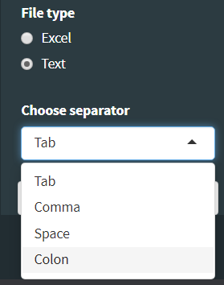

Exporting is important when using proVision, we do not save any data thus if the page is refreshed both your data and progress will be lost. Luckily the ProVision workflow analyses data fast and allows for exporting at any step of the workflow. All downloaded files will be present in your download folder.
The data can only be exported after the first filtering has been done. There are two main options, namely exporting as excel files or exporting to a text file with user specified delimeters. Exporting to excel is the easiest way to retrieve the data in a familiar format, however this may not function correctly due to java discrepencies. Exporting to text file format is more versatile as the delimeters can be specified. The common delimiters such as tab, spcace, comma and colon are supported. To handle text exported data in excel open the text file in a text editor, copy the contents to a excel sheet and use the text to columns option to separate the data. Downloaded content can be found in your downloads folder.